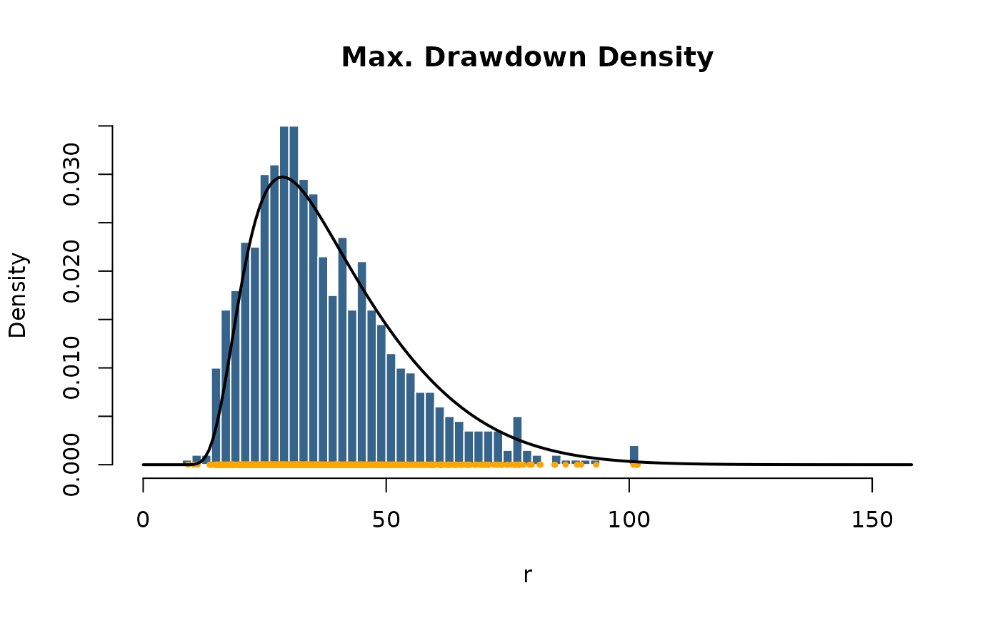
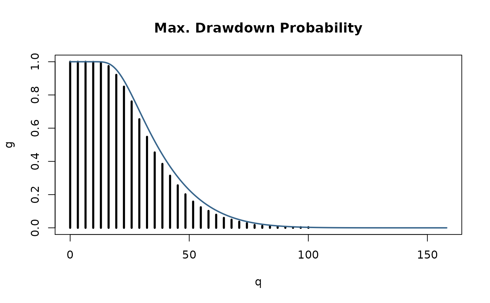

Drawdown Statistics
stats-maxdd.RdThis is a collection and description of
functions which compute drawdown statistics.
Included are density, distribution function,
and random generation for the maximum drawdown
distribution. In addition the expectation of
drawdowns for Brownian motion can be computed.
The functions are:
dmaxdd | the Density function, |
pmaxdd | the Distribution function, |
rmaxdd | the random number generator, |
maxddStats | the expectation of drawdowns. |
Usage
dmaxdd(x, sd = 1, horizon = 100, N = 1000)
pmaxdd(q, sd = 1, horizon = 100, N = 1000)
rmaxdd(n, mean = 0, sd = 1, horizon = 100)
maxddStats(mean = 0, sd = 1, horizon = 1000)Arguments
- x, q
a numeric vector of quantiles.
- n
an integer value, the number of observations.
- mean, sd
two numeric values, the mean and standard deviation.
- horizon
an integer value, the (run time) horizon of the investor.
- N
an integer value, the precession index for summations. Before you change this value please inspect Magdon-Ismail et. al. (2003).
Note
Currrently, for the functions dmaxdd and pmaxdd only the
trend or driftless case is implemented.
Value
dmaxdd
returns for a trendless Brownian process mean=0 and
standard deviation "sd" the density from the probability
that the maximum drawdown "D" is larger or equal to "h"
in the interval [0,T], where "T" denotes the time horizon of the investor.
pmaxdd
returns for a trendless Brownian process mean=0 and
standard deviation "sd" the the probability
that the maximum drawdown "D" is larger or equal to "h"
in the interval [0,T], where "T" denotes the time horizon of the investor.
rmaxdd
returns for a Brownian Motion process with mean mean and
standard deviation sd random variates of maximum drawdowns.
maxddStats
returns the expectation Value E[D] of maximum drawdowns of
Brownian Motion for a given drift mean, variance sd,
and runtime horizon of the Brownian Motion process.
References
Magdon-Ismail M., Atiya A.F., Pratap A., Abu-Mostafa Y.S. (2003); On the Maximum Drawdown of a Brownian Motion, Preprint, CalTech, Pasadena USA, p. 24.
Examples
## rmaxdd -
# Set a random seed
set.seed(1953)
# horizon of the investor, time T
horizon = 1000
# number of MC samples, N -> infinity
samples = 1000
# Range of expected Drawdons
xlim = c(0, 5)*sqrt(horizon)
# Plot Histogram of Simulated Max Drawdowns:
r = rmaxdd(n = samples, mean = 0, sd = 1, horizon = horizon)
hist(x = r, n = 40, probability = TRUE, xlim = xlim,
col = "steelblue4", border = "white", main = "Max. Drawdown Density")
points(r, rep(0, samples), pch = 20, col = "orange", cex = 0.7)
## dmaxdd -
x = seq(0, xlim[2], length = 200)
d = dmaxdd(x = x, sd = 1, horizon = horizon, N = 1000)
lines(x, d, lwd = 2)

## pmaxdd -
# Count Frequencies of Drawdowns Greater or Equal to "h":
n = 50
x = seq(0, xlim[2], length = n)
g = rep(0, times = n)
for (i in 1:n) g[i] = length (r[r > x[i]]) / samples
plot(x, g, type ="h", lwd = 3,
xlab = "q", main = "Max. Drawdown Probability")
# Compare with True Probability "G_D(h)":
x = seq(0, xlim[2], length = 5*n)
p = pmaxdd(q = x, sd = 1, horizon = horizon, N = 5000)
lines(x, p, lwd = 2, col="steelblue4")

## maxddStats -
# Compute expectation Value E[D]:
maxddStats(mean = -0.5, sd = 1, horizon = 10^(1:4))
#> [1] 6.841696 52.000000 502.000000 5002.000000
maxddStats(mean = 0.0, sd = 1, horizon = 10^(1:4))
#> [1] 3.963327 12.533141 39.633273 125.331414
maxddStats(mean = 0.5, sd = 1, horizon = 10^(1:4))
#> [1] 2.529253 4.566413 6.809237 9.101853